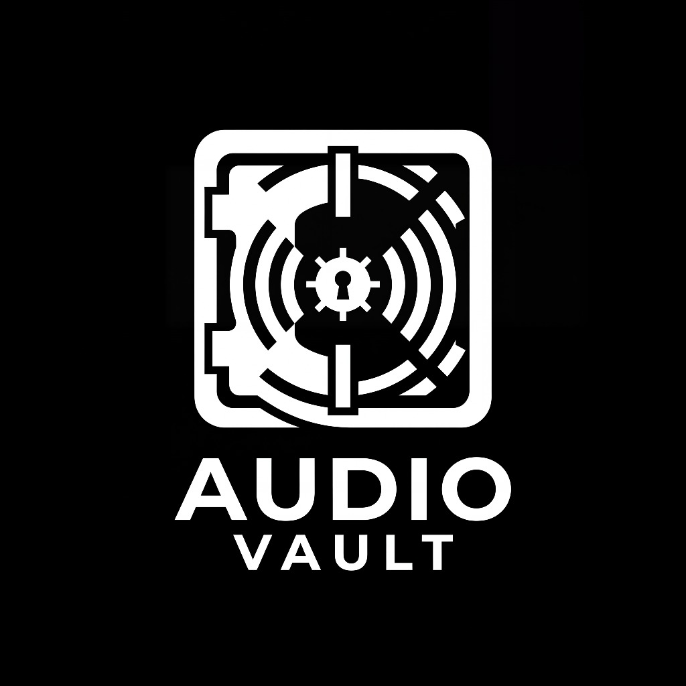

Audio Vault BETAA private, lighting-fast desktop application to organize, analyze, and manage your local audio library. No cloud required.
Analyzes every track locally to extract BPM, Camelot Key, energy levels, and mood tags automatically as you import.
Instantly search thousands of beats. Filter by BPM ranges, specific musical keys, moods, or custom tags.
Select multiple variations of a beat, click export, and generate a perfectly organized ZIP pack ready to send to clients.
A beautiful inspector panel lets you preview audio, edit metadata, add ISRC codes, and tweak genres seamlessly.
Easily convert local tracks between WAV, AIFF, FLAC, and MP3 without needing third-party tools.
Your beats never leave your hard drive. Audio Vault points directly to your Finder folders and works completely offline.
Click the download button above to grab the latest universal build.
Double-click the DMG file and drag Audio Vault into your Applications folder.
Since this is a beta release, macOS will prevent you from opening it normally. You must Right-Click → Open the app from Finder, then click "Open" on the warning dialog.